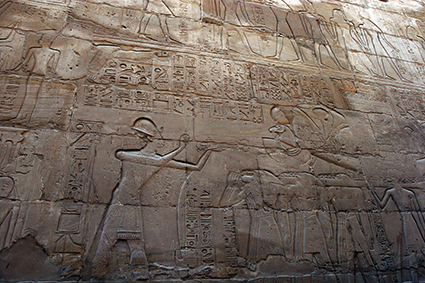
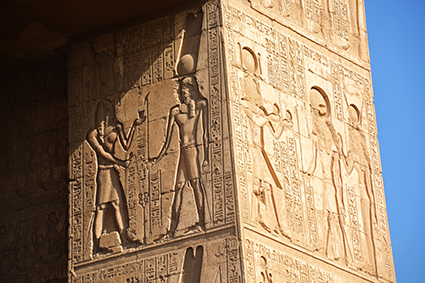

Carrossel de imagens
Clique nas setas para navegar.

Templo de Karnak, Luxor, no Egito, 2015.
Templo de Karnak, Luxor, no Egito, 2018.
Templo de Karnak, Luxor, no Egito, 2014.

Templo de Karnak, Luxor, no Egito, 2021.
voltar para o conteúdo principal